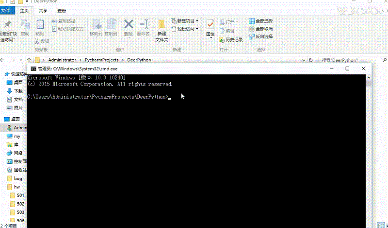
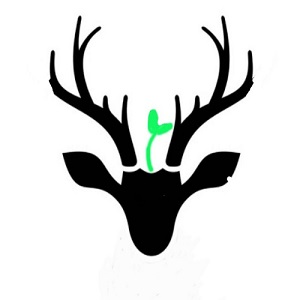
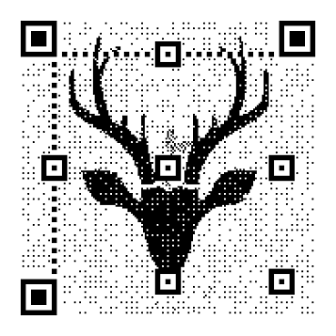
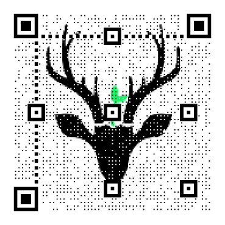
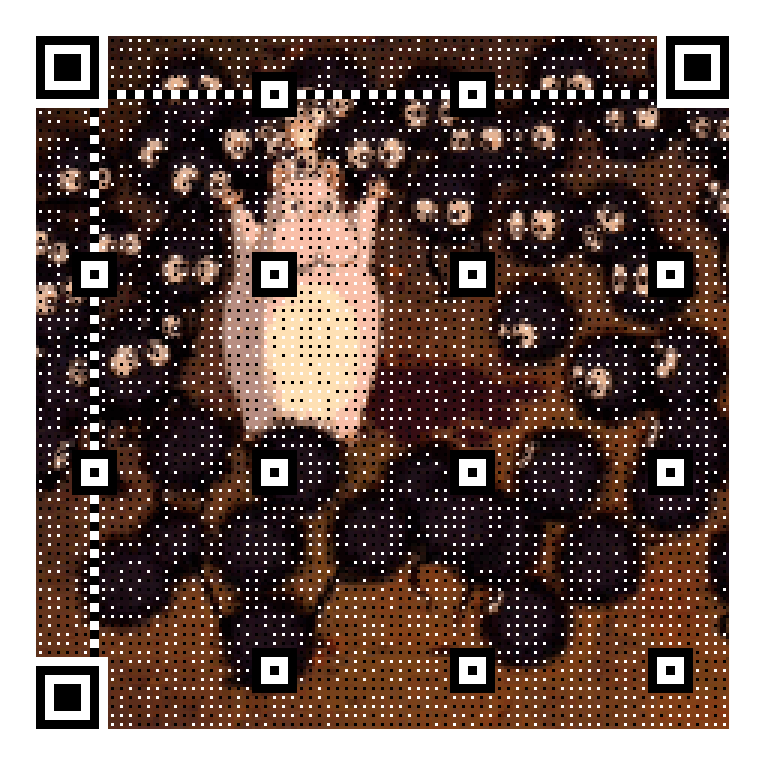

还未完成暂不开放，谢谢
同样我们首先要安装库。
pip install myqr也许你的Python版本需要改成pip3.ok,这样我们就可以开始制作自己的二维码了，实际每个二维码都只有一行代码，我们需要在cmd命令提示行下进行操作。
myqr 图片内容文字 [-v {1,2,3,...,40}] [-l {L,M,Q,H}] [-n output-filename] [-d output-directory] [-p picture_file] [-c] [-con contrast] [-bri brightness]其中括号内的项目是选填，下面我们来看看什么意思-v 默认边长 数字是1~40，数字越大边长越大-l 纠错等级 内容是L、M、Q、H。L最小，H最大。。即使编码受损，也可自动恢复数据，纠错能力越高，数据量会随之增加，尺寸也会变大-n 输出文件名 默认输出名字是：qrcode.png, 格式可以是 .jpg， .png ，.bmp ，.gif-d 输出位置 默认位置是当前目录-p 图片结合 将二维码图像与一张同目录下的图片相结合，产生一张黑白图片-c 色彩 可以将黑白二维码变为彩色-con 对比度 可以将黑白二维码变为彩色-bri 亮度 可以将黑白二维码变为彩色
普通二维码可以将文字内容加进去或者将二维码链接到一个网站，这里我用一个网站做示范。
myqr https://wzhmicro.github.io/

接下来我们将二维码变成以这个图为底版的二维码。
 myqr https://wzhmicro.github.io/ -p deer.jpg接下来我们变成彩色的图片,我们只有加上-c的参数就可以
myqr https://wzhmicro.github.io/ -p deer.jpg -c
和图片一样的代码，只是将png或者gif换成了gif格式，同样需要彩色别忘了加-c
myqr https://wzhmicro.github.io/ -p example.gif -c -v 15

还未完成暂不开放，谢谢

还未完成暂不开放，谢谢

还未完成暂不开放，谢谢
如果大家有什么建议或者建议请及时联系我我才能为大家做出更好的教程